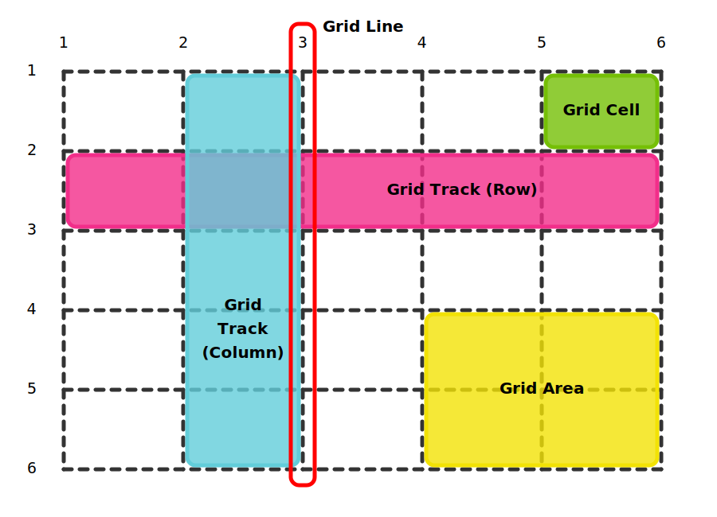

Grid container: the element on which display: grid is applied, it's the parent of all grid items.
Grid items: the elements that are children of the grid container.
Grid lines: dividing lines that make up the structure of the grid, they are numbered starting from 1.
Grid tracks: the grid columns and the grid rows, they are between two adjacent grid lines.
Grid cells: the intersection between a grid column and a grid row.
Grid areas: total space surrounded by four grid lines.
Grid gaps/gutters: specify the size of the grid lines, outer edges are excluded.

Grid layout
grid-template-columns and grid-template-rows define the width of the columns and the height of the rows. We can name the grid lines here and use them when mapping the items into the grid layout.
grid-column-start, grid-column-end, grid-row-start and grid-row-end refer to grid lines and define the grid item's location within the grid.
grid-column is a shorthand for grid-column-start / grid-column-end and grid-row is a shorthand for grid-row-start / grid-row-end.
grid-area is a shorthand for grid-row-start / grid-column-start / grid-row-end / grid-column-end.
header grid-column: 1 / 3 or with the names we defined: grid-column: vert-line1 / vert-line3 grid-row: 1 / 2main 300px grid-column-start: 2 grid-column-end: 3 grid-row-start: 2 grid-row-end: 3